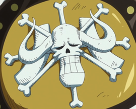
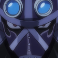
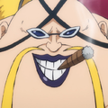
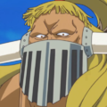
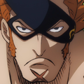
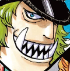
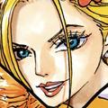
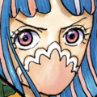

L'Équipage aux Cent Bêtes |
|---|
|  |
| Nom Japonais : 百獣海賊団 |
| Nom Romanisé : Hyakujū Kaizokudan |
| Nom Français : L'Équipage aux Cent Bêtes |
| Capitaine : kaido |
| Quartier Généra : Île Onigashima |
Prime Totale :  7,601,100,000 7,601,100,000 |
Capitaine |
 kaido kaido |
okanban(bras droit) |
| king |
| quenn |
| jack |
membre principaux |
| x drake |
 page one page one |
 who's who who's who |
| sasaki |
| black maria |
| ulti |